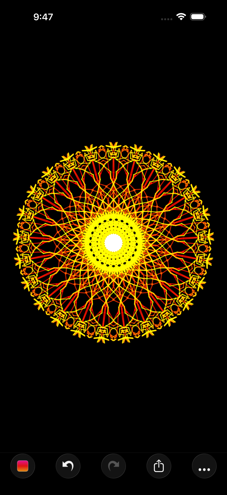
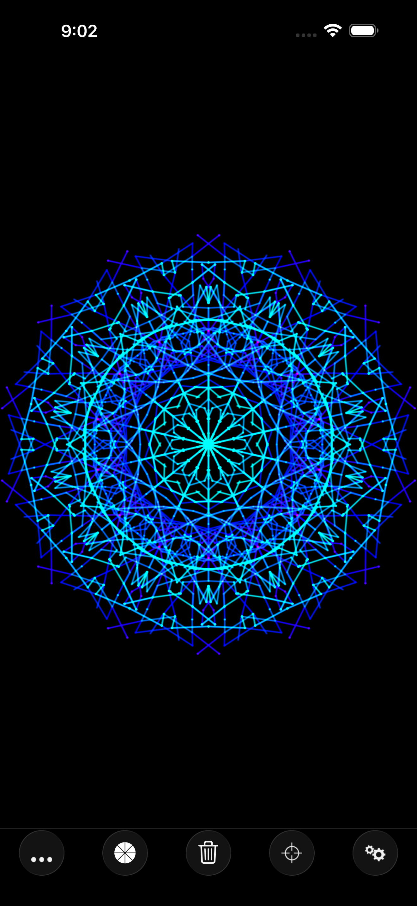
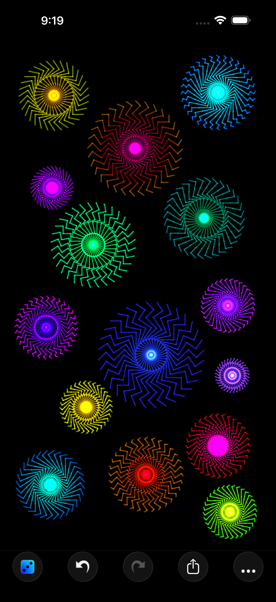
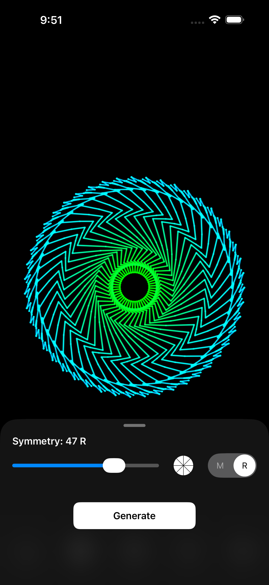

The Pitch
Symmetry Lab turns simple strokes into intricate, kaleidoscopic art. Draw a single line and the app mirrors it instantly — up to 128-fold, rotational and reflected — so every gesture blooms into a mandala. Beneath that one disarming idea is a surprisingly deep toolkit: dynamic color palettes that shift as the stroke travels, a well of textured brushes, snap-to-grid modes for patterns that feel almost engineered, and an autonomous generator that draws on its own. No artistic skill required — make a mark and watch something extraordinary emerge. Quietly loved by hobbyists, artists, and kids since 2009.
Demo Video
A short demo loop · 926 × 1920 · H.264 MP4 · download
Get Symmetry Lab
Fast Facts
Screenshots




Click any screenshot for the full-resolution PNG (1320 × 2868), grab all four together as a .zip above, or download everything — screenshots, demo video, and icon — in the full press kit.
App Icon
{kind=link}
About the Developer
Luke Bradford is an independent iOS developer with a decade-plus body of small, design-led apps built around geometry and restraint. The same sensibility runs through all of them — minimal interfaces, considered color, and a love of getting a single idea exactly right. Symmetry Lab has been a quiet favorite since 2009, continually refined while keeping the same effortless first stroke. Also by Luke: QUARC, a twist on the classic falling block puzzle, and Textile, a quiet, distraction-free notes app.
Press Contact
Questions, requests for promo codes, or interview requests are welcome — I usually reply within a day.